Ridgeback searches a room for a Unitree G1 standing at its worktable, localizes it, parks with its basket within reach of G1, waits five seconds and drives back to its start. This page shows how the final code performed; the scenes are on the scenarios page, the design in the technical review.
2
completed missions
parked, waited and returned to start
1
correct safe refusal
no_feasible: no pose fits, no attempt, returned
4
failed or incomplete runs
3 integration defects, each fixed before the next run; 1 G1 not localized
7
evaluated post-merge runs
14 Nov 2026, Gazebo and Isaac
✓Isaac standard64b3176 · complete
✗Gazebo warehouse standard64b3176 · plan expired (fixed)
✗Gazebo warehouse standard_run2c1435d9 · plan expired (fixed)
✗Gazebo warehouse standard_run399387ae · G1 not localized
✗Gazebo warehouse standard_run499387ae · stale LiDAR (fixed)
How to read these numbers. The 7 runs span 4 commits (64b3176, c1435d9, 99387ae, 5b5133c): the merged code, then three fixes for defects these runs exposed. Each count describes these runs only; they do not establish a general success rate. 2 of the 8 scenarios were run after the merge; earlier runs are in the records, and a later Gazebo trial in the hospital ward is reported separately.
Gazebo Sim and Isaac Sim
The same autonomy code, scene and parking priorities in both simulators. One run each: a demonstration, not a rate.
Isaac Sim
isaac_standard · code 64b3176
✗Attempt 1: G1's rightrejected: obstacle on the route (LiDAR)
✓Attempt 2: G1's leftparked, waited 5 s
✓Returned to start
■MISSION_COMPLETE
Gazebo Sim (warehouse)
gz_standard_run5 · code 5b5133c
✗Attempt 1: G1's leftrejected: obstacle on the route (LiDAR)
✗Attempt 2: G1's rightrejected: obstacle in the stopping path (LiDAR)
✓Attempt 3: behind G1parked, waited 5 s
✓Returned to start
■MISSION_COMPLETE
Measurement
Isaac Sim
Gazebo Sim (warehouse)
Source
Mission duration
9:56
10:22
mission log
of which: search for G1
6:37
8:31
mission log
Arrival error at the parking pose
0.020 m
0.017 m
mission estimate
G1 localization error
no ground truth
0.015-0.041 m
ground truth
Parked reach (required 0.30-0.60 m)
no ground truth
0.479 m
ground truth
Basket to G1's lower body
no ground truth
0.089 m
ground truth
Final distance from the start
no ground truth
0.60 m
ground truth
Gazebo samples the true poses of the robot and G1; Isaac records only what the mission itself estimated, so its ground-truth cells are empty rather than estimated.
Safety test: no feasible parking position (Gazebo)
gz_no_feasible · code 5b5133c · G1 localized 0.025, 0.053 m from its true position (ground truth)
⊘No safe parking pose0 of 307 candidate poses valid
✓Returned to start
■MISSION_FAILEDexpected for this scene
Why the two simulators parked differently
Each parking leg is checked live against both LiDAR scans; a return on the route ahead or in the stopping path cancels the leg before contact, and the mission tries the next direction in its priority order (G1's sides, then behind, then in front). In Isaac the check rejected G1's right and the left succeeded. In Gazebo it rejected both sides, so the mission parked behind G1. In the Gazebo run, attempt 1: a LiDAR return lay on the planned route, 0.56 m from the robot while the robot was 0.90 m from G1; attempt 2: a LiDAR return lay in the stopping path, 0.10 m from the robot while the robot was 0.37 m from G1 (LiDAR measurements).
Featured experiments
Three runs on the merged code, each with captures from that run only, cropped to the robot and G1. Labels are drawn over the images and can be switched off; click an image to see the whole capture.
A
Side parking in Isaac Sim
Parked on attempt 2 and returnedisaac_standard · code 64b3176 · 14 Nov 2026 13:42
The LiDAR check rejected the approach to G1's right; Ridgeback parked at G1's left on attempt 2, waited and drove back to its start.
OutcomeMISSION_COMPLETE
ParkedG1's left
Parking attempts21 rejected by the LiDAR check
Arrival error0.020 mmission estimate; no ground truth
Duration9:56min:s
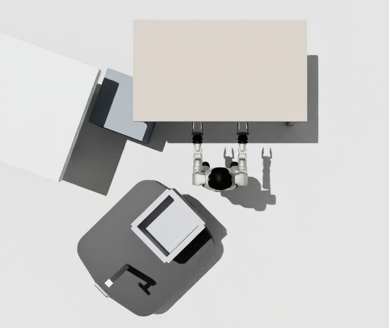
Top-down view while parked: Ridgeback beside G1's left, its basket toward G1. State PARKED, 8:52 into the mission. Cropped from isaac_standard_parked_workstation.png; labels added for this page; click for the whole capture.
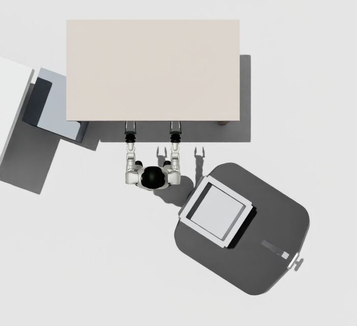
Angled view from the run's recording while parked. State PARKED, 8:58 into the mission. Cropped from frame of the run's recording; click for the whole capture.
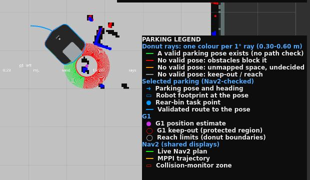
RViz while parked: the parking donut (one ray per degree; green = a valid pose) and the selected pose. State PARKED, 8:54 into the mission. Cropped from PARKED_rviz2_71303314.png; click for the whole capture.
Mission timelinetotal 9:56 (min:s)
Search for G1
Search for G1 6:37
Localize, map and plan 1:19
Parking attempts 0:51
Parked wait 0:22
Return home 0:47
✗Attempt 1: G1's rightrejected: obstacle on the route (LiDAR)
✓Attempt 2: G1's leftparked, waited 5 s
✓Returned to start
■MISSION_COMPLETE
Details: measurements and every state change
G1 heading estimate-88.2 deg (configured -90 deg)
ReturnEnded within the shared 0.40 m goal tolerance of the start, any heading (mission estimate)
Ground truthIsaac records none: positions and distances here are the mission's own estimates
Evidenceartifacts/exploration/p8_2026-11-14/isaac_standard/run and the run's recording, outside the repository
6:37G1 confirmed by the detector
6:47G1 localized and verified in depth
6:48Mapping the floor around G1
7:29G1 localized and verified in depth
7:29Mapping the floor around G1
7:49G1 localized and verified in depth
7:55Attempt 1 started: G1's right
7:58Attempt 1 rejected: obstacle on the route (LiDAR)
8:17G1 localized and verified in depth
8:24Attempt 2 started: G1's left
8:46Parked
9:08Returning to start
9:56MISSION_COMPLETE
B
Rear parking in Gazebo Sim
Parked on attempt 3 and returnedgz_standard_run5 · code 5b5133c · 14 Nov 2026 14:50
The LiDAR check rejected both sides of G1; Ridgeback parked behind G1 on its third attempt, 0.479 m from G1's axis (ground truth), and drove back to its start.
Top-down view while parked: G1 facing its worktable, Ridgeback behind G1. State PARKED, 10:06 into the mission. Cropped from gz_standard_parked_workstation.png; labels added for this page; click for the whole capture.
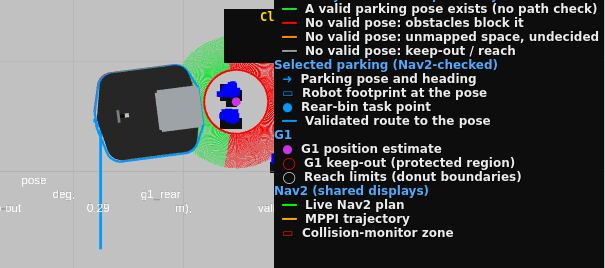
RViz while parked: the robot footprint behind G1 inside the parking donut. State PARKED, 10:08 into the mission. Cropped from PARKED_rviz2_71303314.png; click for the whole capture.
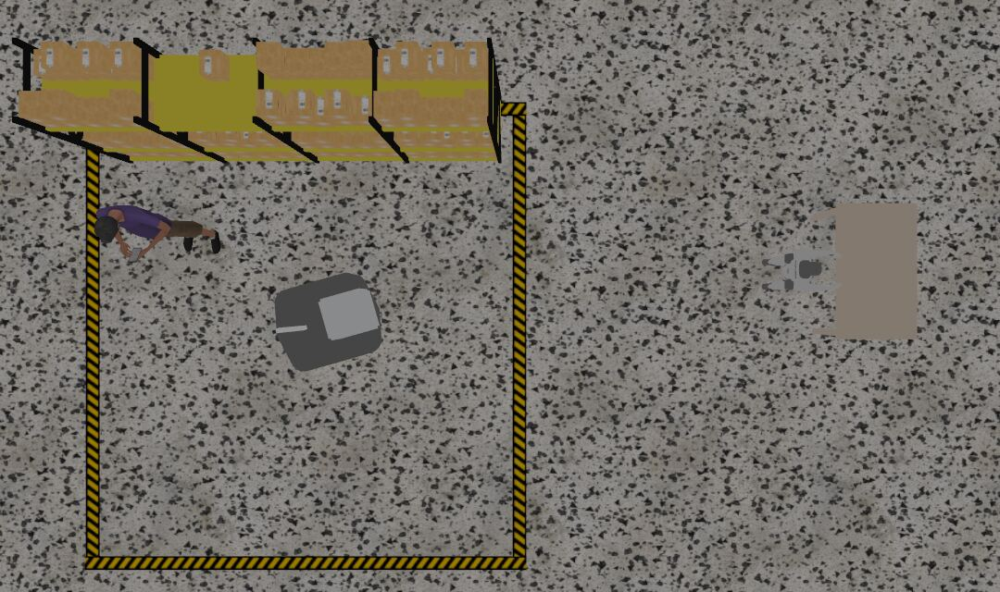
After the mission: Ridgeback back in its start area, G1 at its worktable. State MISSION_COMPLETE, 10:30 into the mission. Cropped from gz_standard_end_overview.png; labels added for this page; click for the whole capture.
Mission timelinetotal 10:22 (min:s)
Search for G1
Search for G1 8:31
Localize, map and plan 0:17
Parking attempts 1:13
Parked wait 0:10
Return home 0:10
✗Attempt 1: G1's leftrejected: obstacle on the route (LiDAR)
✗Attempt 2: G1's rightrejected: obstacle in the stopping path (LiDAR)
✓Attempt 3: behind G1parked, waited 5 s
✓Returned to start
■MISSION_COMPLETE
Details: measurements and every state change
Why not beside G1In the Gazebo run, attempt 1: a LiDAR return lay on the planned route, 0.56 m from the robot while the robot was 0.90 m from G1; attempt 2: a LiDAR return lay in the stopping path, 0.10 m from the robot while the robot was 0.37 m from G1 (LiDAR measurements).
Why behind G1After both sides were rejected, the rear is the next class in the priority order
G1 heading error6.2 deg (ground truth)
Basket to G10.089 m from G1's lower body (ground truth)
ReturnEnded 0.60 m from the true start (ground truth); the mission's own estimate was within its 0.40 m tolerance
Evidenceartifacts/exploration/p8_2026-11-14/gz_standard_run5, outside the repository
8:31G1 confirmed by the detector
8:38G1 localized and verified in depth
8:48Attempt 1 started: G1's left
9:03Attempt 1 rejected: obstacle on the route (LiDAR)
9:15G1 localized and verified in depth
9:17Attempt 2 started: G1's right
9:31Attempt 2 rejected: obstacle in the stopping path (LiDAR)
9:46G1 localized and verified in depth
9:50Attempt 3 started: behind G1
10:01Parked
10:11Returning to start
10:22MISSION_COMPLETE
C
No feasible parking position (Gazebo Sim)
Safe refusal as expected: no safe pose; returned homegz_no_feasible · code 5b5133c · 14 Nov 2026 14:46
Two panels, the worktable and a bed leave no room for Ridgeback near G1: none of the 307 candidate poses was valid, so the mission made no parking attempt, drove back to its start and reported why.
OutcomeMISSION_FAILEDexpected refusal
Parkednono safe pose
Parking attempts0
G1 localization error0.025-0.053 mground truth
Valid parking poses0 of 307all blocked by the scene
Duration3:24min:s
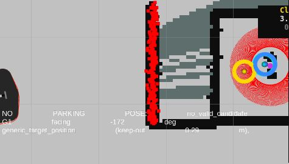
Top-down view of the scene after the mission: G1 boxed in by two panels, its worktable and a bed; Ridgeback had already driven back to its start. State MISSION_FAILED, 3:35 into the mission. Cropped from gz_no_feasible_end_workstation.png; labels added for this page; click for the whole capture.
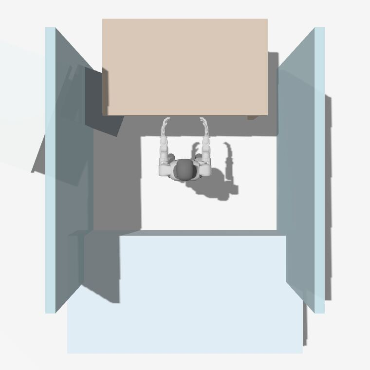
RViz at the end: every ray of the parking donut red, no valid pose around G1. State MISSION_FAILED, 3:28 into the mission. Cropped from END_MISSION_FAILED_rviz2_71303314.png; click for the whole capture.
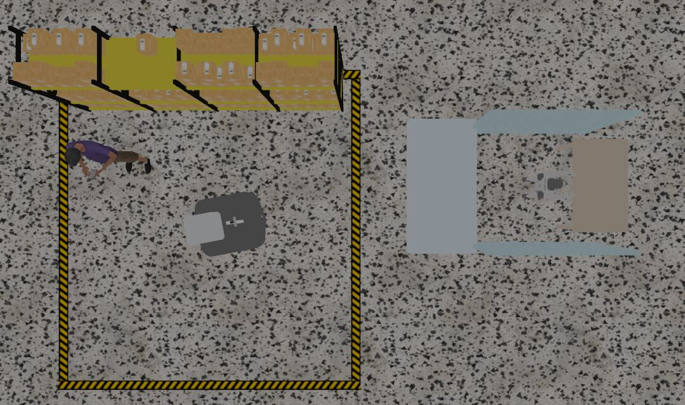
After the mission: Ridgeback back in its start area, G1 in its pen. State MISSION_FAILED, 3:33 into the mission. Cropped from gz_no_feasible_end_overview.png; labels added for this page; click for the whole capture.
Mission timelinetotal 3:24 (min:s)
Search for G1
Localize, map and plan
Search for G1 0:43
Localize, map and plan 2:22
Return home 0:19
⊘No safe parking pose0 of 307 candidate poses valid
✓Returned to start
■MISSION_FAILEDexpected for this scene
Details: measurements and every state change
SceneG1 at its worktable inside a pen: panels 0.8 m to each side and a 0.5 m bed 1.25 m behind
Planner resultno_valid_candidate: 0 of 307 candidate poses valid; the footprints overlap the panels, table or bed
G1 heading error7.8 deg (ground truth)
ReturnEnded 0.36 m from the true start (ground truth)
Evidenceartifacts/exploration/p8_2026-11-14/gz_no_feasible, outside the repository
0:43G1 confirmed by the detector
0:50G1 localized and verified in depth
0:50Mapping the floor around G1
3:05G1 localized and verified in depth
3:05No safe parking pose: returning to start
3:24MISSION_FAILED
Trial: Gazebo in the hospital ward
A separate trial, not the current configuration. On 17 November the Gazebo demonstration was moved into the hospital ward that Isaac already uses (parking_demo: initial_test_world without its authored G1), with G1 at the same workstation as in Isaac and the same mission code. One run per scene: the standard scene parked; the no_feasible safety scene mislocalized G1 and did not refuse as intended. Gazebo therefore kept the warehouse, and everything above uses warehouse runs. The trial is described in the dated record.
D
Standard scene in the hospital ward (Gazebo trial)
Parked on attempt 3 and returnedgz_standard · code 822ae6d · 17 Nov 2026 00:43
In the hospital ward the LiDAR check rejected both sides of G1; Ridgeback parked behind G1 on attempt 3, 0.500 m from G1's axis (ground truth), and drove back to its start. G1 was localized 0.100-0.116 m from its true position, several times the warehouse runs' error.
Top-down view while parked: G1 facing its worktable, Ridgeback behind G1. State PARKED, 12:04 into the mission. Cropped from gz_standard_parked_workstation.png; labels added for this page; click for the whole capture.
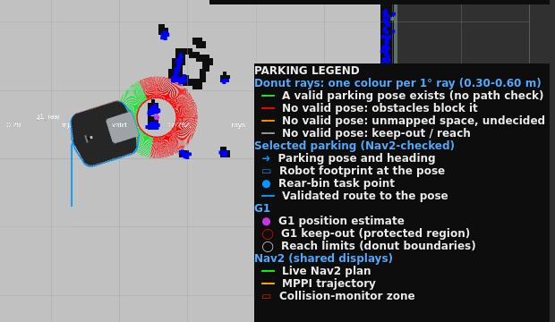
RViz while parked: the parking donut and the robot footprint behind G1. State PARKED, 12:06 into the mission. Cropped from PARKED_rviz2_71303314.png; click for the whole capture.
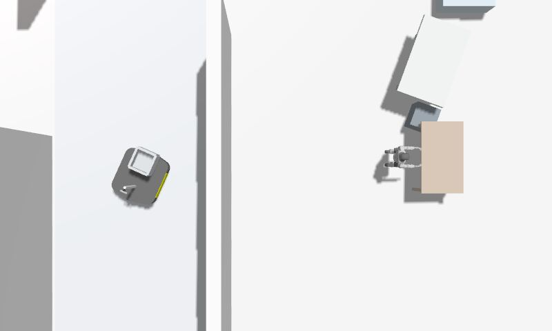
After the mission: Ridgeback back in the corridor, G1 at its worktable in the south room. State MISSION_COMPLETE, 12:51 into the mission. Cropped from gz_standard_end_overview.png; labels added for this page; click for the whole capture.
Mission timelinetotal 12:43 (min:s)
Search for G1
Search for G1 10:00
Localize, map and plan 0:14
Parking attempts 1:44
Parked wait 0:11
Return home 0:34
✗Attempt 1: G1's leftrejected: obstacle in the stopping path (LiDAR)
✗Attempt 2: G1's rightrejected: obstacle in the stopping path (LiDAR)
✓Attempt 3: behind G1parked, waited 5 s
✓Returned to start
■MISSION_COMPLETE
Details: measurements and every state change
Why not beside G1In the Gazebo run, attempt 1: a LiDAR return lay in the stopping path, 0.11 m from the robot while the robot was 0.38 m from G1; attempt 2: a LiDAR return lay in the stopping path, 0.10 m from the robot while the robot was 0.34 m from G1 (LiDAR measurements).
Basket to G10.110 m from G1's lower body (ground truth)
G1 heading error6.4 deg (ground truth)
ReturnEnded 0.22 m from the true start (ground truth)
Evidenceartifacts/exploration/hospital_2026-11-17/gz_standard, outside the repository
10:00G1 confirmed by the detector
10:08G1 localized and verified in depth
10:14Attempt 1 started: G1's left
10:40Attempt 1 rejected: obstacle in the stopping path (LiDAR)
10:57G1 localized and verified in depth
11:01Attempt 2 started: G1's right
11:22Attempt 2 rejected: obstacle in the stopping path (LiDAR)
11:43G1 localized and verified in depth
11:47Attempt 3 started: behind G1
11:58Parked
12:09Returning to start
12:43MISSION_COMPLETE
E
No feasible position in the hospital ward (Gazebo trial)
Refusal missed: a parking attempt in a scene with no safe pose, stopped by the LiDAR check; returned homegz_no_feasible · code 23b70ff · 17 Nov 2026 00:57
The safety scene did not refuse as intended: G1 was localized 0.566 m from its true position, so a pose beside the panel looked feasible. The live LiDAR check cancelled that attempt before contact; G1 was not relocalized, and the robot drove back to its start.
OutcomeMISSION_FAILEDexpected: a refusal without an attempt
Parkedno
Parking attempts11 rejected by the LiDAR check
G1 localization error0.566 mground truth
Duration22:33min:s
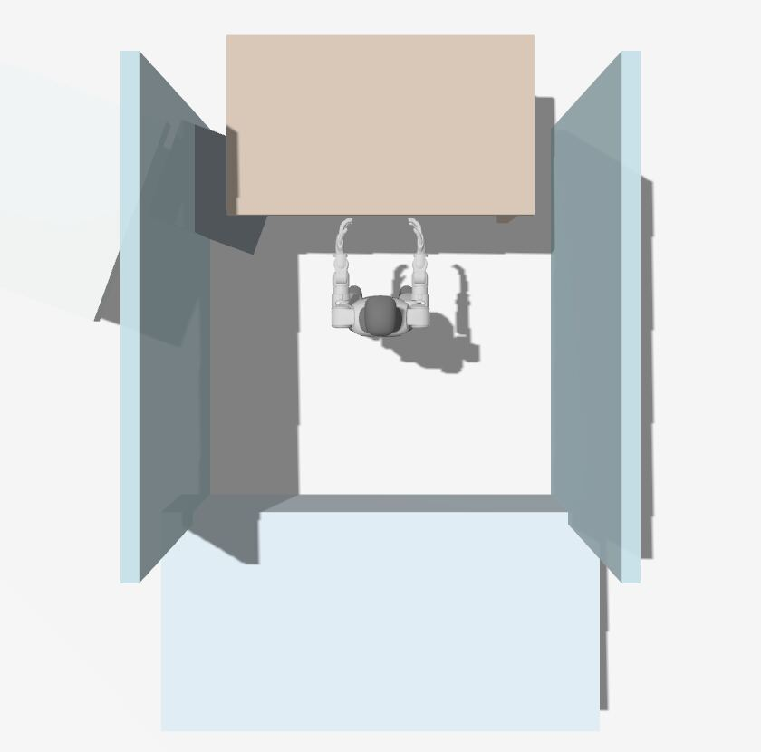
Top-down view after the mission: G1 boxed in by two panels, its worktable and a bed; Ridgeback had driven back to its start. State MISSION_FAILED, 22:46 into the mission. Cropped from gz_no_feasible_end_workstation.png; labels added for this page; click for the whole capture.
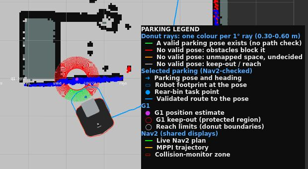
RViz during the attempt: the pose planned from the wrong G1 position, beside the panel; the LiDAR check cancelled this leg 3 s later. State NAVIGATING_TO_PARKING, 18:42 into the mission. Cropped from NAVIGATING_TO_PARKING_rviz2_71303314.png; click for the whole capture.
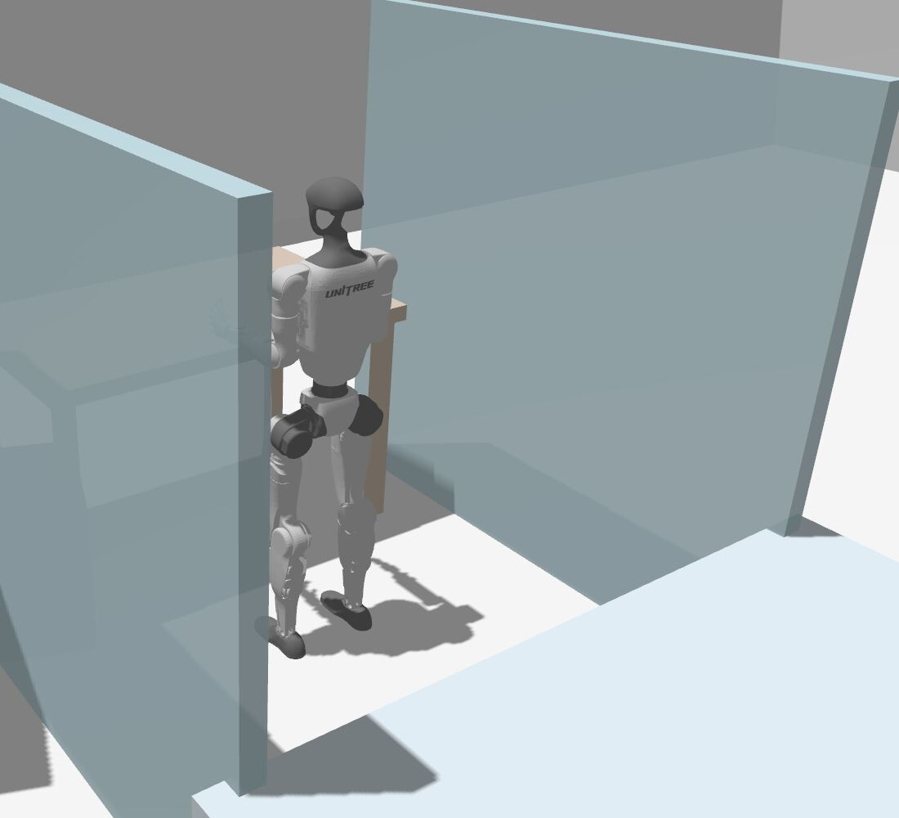
Close-up after the mission: G1 at its worktable between the two panels. State MISSION_FAILED, 22:48 into the mission. Cropped from gz_no_feasible_end_closeup.png; click for the whole capture.
Mission timelinetotal 22:33 (min:s)
Search for G1
Search for G1 17:55
Localize, map and plan 0:17
Parking attempts 1:44
Return home 2:37
✗Attempt 1: G1's rightrejected: obstacle in the stopping path (LiDAR)
✓Returned to start
■MISSION_FAILED
Details: measurements and every state change
What went wrongThe depth check placed G1's head 4.11 m from the camera and re-seeded G1 at (-0.05, -4.19), between G1 and its right panel; the planned pose lay beyond that panel
SafetyLiDAR check cancelled the final leg in the stopping path; minimum ground-truth clearance 0.086 m (base-right_panel)
Final reasonreturned to start after: parking attempt 1/3 not retried: target_localization_timeout: G1 not relocalized for the next parking attempt
ConsequenceGazebo kept the warehouse as its parking world; this trial is recorded separately
Evidenceartifacts/exploration/hospital_2026-11-17/gz_no_feasible, outside the repository
17:55G1 confirmed by the detector
18:03G1 localized and verified in depth
18:12Attempt 1 started: G1's right
18:45Attempt 1 rejected: obstacle in the stopping path (LiDAR)
19:56Returning to start
22:33MISSION_FAILED
Performance
Mission duration by phase
What it shows: how long each post-merge run, and each hospital-ward trial run, spent searching for G1, localizing and planning, parking, waiting and returning. Searching dominates every run; hover a segment for its duration.
Search for G1Localize, map and planParking attemptsParked waitReturn home
Show the durations as a table
Run
Search for G1 (s)
Localize, map and plan (s)
Parking attempts (s)
Parked wait (s)
Return home (s)
Total (s)
Outcome
Gazebo warehouse · gz_standard · 64b3176
205
13
0
0
0
218
Plan expired before driving; stopped
Gazebo warehouse · gz_standard_run2 · c1435d9
620
22
0
0
0
641
Plan expired before driving; stopped
Gazebo warehouse · gz_standard_run3 · 99387ae
1055
21
0
0
0
1076
Perception: G1 not localized; stopped
Gazebo warehouse · gz_standard_run4 · 99387ae
335
14
0
0
7
356
Stopped: stale LiDAR scans while the mission node was overloaded (fixed in 5b5133c); returned home
Gazebo warehouse · gz_standard_run5 · 5b5133c
511
17
73
10
10
622
Parked on attempt 3 and returned
Gazebo warehouse · gz_no_feasible · 5b5133c
43
142
0
0
19
204
Safe refusal as expected: no safe pose; returned home
Isaac · isaac_standard · 64b3176
397
79
51
22
47
596
Parked on attempt 2 and returned
Gazebo ward · gz_standard · 822ae6d
600
14
104
11
34
763
Parked on attempt 3 and returned
Gazebo ward · gz_no_feasible · 23b70ff
1075
17
104
0
157
1353
Refusal missed: a parking attempt in a scene with no safe pose, stopped by the LiDAR check; returned home
Times from the mission's logged state changes (mission log), not from ground truth.
G1 localization error
What it shows: how far each G1 position the mission planned with was from G1's true position, in the post-merge Gazebo runs and the hospital-ward trial (one dot per localization; an arrow marks a value off the scale).
Warehouse runs: 8 localizations, 0.011-0.131 m. Hospital-ward trial: standard 0.100-0.116 m; no_feasible 0.566 m. Gazebo ground truth only; Isaac records no ground truth, so it has no points here.
Parking attempts in completed missions
What it shows: every completed mission since the G1 position check (9 November): each attempt in order, whether the live LiDAR check rejected it and why. A mission makes at most three attempts.
Isaac · isaac_standard · 8dd2a1e09 Nov 2026 · G1 position check
✗Attempt 1: G1's rightrejected: obstacle on the route (LiDAR)
✓Attempt 2: behind G1parked, waited 5 s
Isaac · isaac_standard_run3 · a67d3c611 Nov 2026 · Reacquisition and demonstration
✓Attempt 1: G1's rightparked, waited 5 s
Gazebo warehouse · gz_standard_run5 · 5b5133c14 Nov 2026 · After merging dev (P8)
✗Attempt 1: G1's leftrejected: obstacle on the route (LiDAR)
✗Attempt 2: G1's rightrejected: obstacle in the stopping path (LiDAR)
✓Attempt 3: behind G1parked, waited 5 s
Isaac · isaac_standard · 64b317614 Nov 2026 · After merging dev (P8)
✗Attempt 1: G1's rightrejected: obstacle on the route (LiDAR)
✗Attempt 1: G1's leftrejected: obstacle in the stopping path (LiDAR)
✗Attempt 2: G1's rightrejected: obstacle in the stopping path (LiDAR)
✓Attempt 3: behind G1parked, waited 5 s
Parked reach against the requirement
What it shows: the distance from G1's axis to the basket centre at every completed Gazebo mission, all campaigns, against the required 0.30-0.60 m band.
Gazebo ground truth only; Isaac records no ground truth and is not shown. The historical false completion parked 1.72 m away, off the scale.
Historical experiments & detailed records
53 recorded runs, newest first, each under the code that ran
Refusal missed: a parking attempt in a scene with no safe pose, stopped by the LiDAR check; returned home
Code23b70ff (hospital ward trial; 822ae6d plus an end-view option for the run tool); the tree's uncommitted start_parking_demo.sh --parallel option was not used
CampaignHospital ward trial
Final reasonreturned to start after: parking attempt 1/3 not retried: target_localization_timeout: G1 not relocalized for the next parking attempt
Sides triedg1_right
G1 heading estimate-88.6 deg
Minimum clearance (ground truth)0.086 m (base-right_panel)
Evidenceartifacts/exploration/hospital_2026-11-17/gz_no_feasible (outside the repository)
2026-11-17 00:43
gz_standard
standard
Gazebo ward
Hospital ward trial 822ae6d
Complete
G1 error 0.100-0.116 m, reach 0.500 m, 3 attempts, 12.7 min
Stopped: stale LiDAR scans while the mission node was overloaded (fixed in 5b5133c); returned home
Code99387ae
CampaignAfter merging dev (P8)
Final reasonreturned to start after: lidar_clearance: lidar_stale: sensors/lidar2d_1/scan
Sides tried-
G1 heading estimate-
Minimum clearance (ground truth)3.845 m (base-G1 lower body)
Evidenceartifacts/exploration/p8_2026-11-14/gz_standard_run4 (outside the repository)
CauseBoth LiDARs published at 29.5 Hz (largest gap 0.15 s); the parking LiDAR check, 14 ms per scan after the merge, held the mission node back so it judged fresh scans stale. Not an obstacle. Fixed in 5b5133c.
Code8dd2a1e plus an earlier state of the changes committed as 3becd27: the position check, first-view turn with its turn-back fallback, first-localization ray hysteresis, stationary target refresh, observation pose following the latest localization, approach-facing explorer goals and planner clearance floor, before future odometry stamps restarted the stationary interval
CampaignG1 position check
Final reasonmotion_evidence_lost: odometry_timestamp
Sides triedg1_left
G1 heading estimate175.1 deg
Minimum clearance (ground truth)0.312 m (base-worktable)
Evidenceartifacts/exploration/workstation_2026-11-09/gz_standard_run5 (outside the repository)
Code8dd2a1e plus an earlier state of the changes committed as 3becd27: the position check, first-view turn, first-localization ray hysteresis, stationary target refresh, observation pose following the latest localization, approach-facing explorer goals and planner clearance floor, before the turn-back fallback
CampaignG1 position check
Final reasonTarget localization did not stabilize before the timeout
Sides tried-
G1 heading estimate-
Minimum clearance (ground truth)0.333 m (base-worktable)
Evidenceartifacts/exploration/workstation_2026-11-09/gz_standard_run4 (outside the repository)
Code8dd2a1e plus an earlier state of the changes committed as 3becd27: the position check, first-view turn, first-localization ray hysteresis, stationary target refresh, approach-facing explorer goals and planner clearance floor, before the observation pose followed the latest localization
CampaignG1 position check
Final reasoncould not return to the G1 observation pose: observation pose deadline expired
Sides tried-
G1 heading estimate169.5 deg
Minimum clearance (ground truth)0.439 m (base-worktable)
Evidenceartifacts/exploration/workstation_2026-11-09/gz_standard_run3 (outside the repository)
Code8dd2a1e plus an earlier state of the changes committed as 3becd27: the position check, first-view turn, first-localization ray hysteresis, approach-facing explorer goals and planner clearance floor, before the stationary target refresh
CampaignG1 position check
Final reasontarget_stale
Sides tried-
G1 heading estimate-
Minimum clearance (ground truth)0.319 m (base-G1 lower body)
Evidenceartifacts/exploration/workstation_2026-11-09/gz_standard_run2 (outside the repository)
Code8dd2a1e plus an earlier state of the changes committed as 3becd27: the position check, first-view turn, approach-facing explorer goals and planner clearance floor, before the first-localization ray hysteresis
CampaignG1 position check
Final reasonTarget localization did not stabilize before the timeout
Sides tried-
G1 heading estimate-
Minimum clearance (ground truth)3.845 m (base-G1 lower body)
Evidenceartifacts/exploration/workstation_2026-11-09/gz_standard (outside the repository)
Refused although the scene has a parking pose (expected: parking behind G1); returned home
Codefe60a88 plus the changes committed as 28769c2
CampaignP7 scenarios
Final reasonreturned to start after: no alternative after 2 parking attempts, directions that failed excluded: no_valid_candidate: no feasible parking pose: {'donut_free': 340, 'donut_occupied': 0, 'donut_unknown': 0, 'candidates':
Sides triedg1_rear, g1_front
G1 heading estimate-179.0 deg
Minimum clearance (ground truth)0.313 m (base-left_panel)
Evidenceartifacts/exploration/scenarios_2026-11-05/gz_both_sides_blocked (outside the repository)
2026-11-05 10:36
gz_left_blocked
left_blocked
Gazebo warehouse
P7 scenarios fe60a88
Complete
G1 error 0.022-0.095 m, reach 0.559 m, 3 attempts, 2.9 min
Final reasonreturned to start after: parking attempt 1/3 not retried: target_localization_timeout: G1 not relocalized for the next parking attempt
Sides triedg1_left
G1 heading estimate178.5 deg
Minimum clearance (ground truth)0.188 m (base-table)
Evidenceartifacts/exploration/scenarios_2026-11-05/gz_standard (outside the repository)
Evidence folders live under artifacts/ outside the repository; the dated records explain each campaign. Gazebo measurements are ground truth sampled every 1-2.5 s; Isaac runs record the mission's own estimates only.